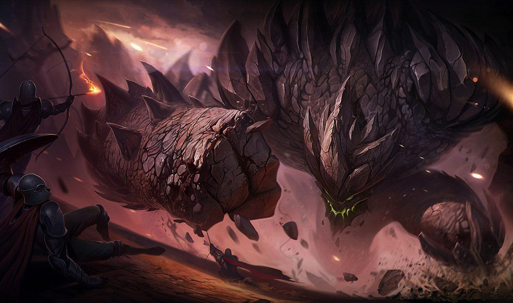

墨菲特被岩石护盾保护，最多吸收最大生命值10%的伤害，若10秒内未受到攻击，护盾将重置。墨菲特的体型随其护甲值而提升，于850点护甲时达到最大体型。
墨菲特将一块岩石碎片从地下射向目标，造成70/120/170/220/270(+0.6AP)魔法伤害，并偷取目标20/25/30/35/40%移动速度，持续3秒。 碎片生成位置：墨菲特面前100单位距离处
被动：墨菲特的护甲提升10/15/20/25/30%，在【花岗岩护盾】生效时变成三倍。 主动：在接下来的5秒里，墨菲特的普攻会引发余波，在一个锥形范围内造成额外的30/45/60/75/90(+0.1AP)(+0.15护甲值)物理伤害。他在激活【雷霆拍击】后的第一次攻击会对目标造成额外物理伤害。
墨菲特锤击地面，对周围敌人造成 60/95/130/165/200(+0.4护甲值)(+0.6AP)魔法伤害，同时减少目标 30/35/40/45/50% 的攻击速度，持续 3 秒。 提高护甲可增加该技能的伤害，加成伤害为墨菲特护甲值的 30%。
墨菲特冲击目标区域，造成200/300/400(+0.8AP)魔法伤害，并将所有敌人抛向空中1.5秒。